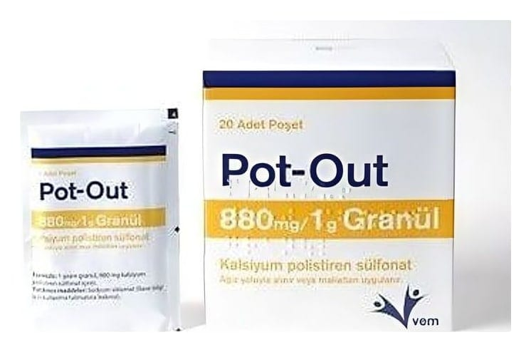

Pot-Out 880 mg/1 g Granül, 60 Adet

Ne için kullanılır
KT · Bölüm 1POT-OUT granül formunda, kanda potasyum yüksekliğini tedavi edici ilaçlar grubuna ait tıbbi bir üründür. POT-OUT, kalsiyum polistiren sülfonat içermektedir. Her biri 15 gram POT-OUT içeren 20, 60 ve 120 adetlik kutularda kullanıma sunulmaktadır. Kandaki potasyum yüksekliğinin tedavisinde kullanılır: ─ Böbrek yetmezliği olan diyaliz hastalarında, diyaliz seansları arasında serum potasyum yüksekliğinin tedavisi ve önlenmesi,
─ Potasyum zehirlenmesinin tedavisi